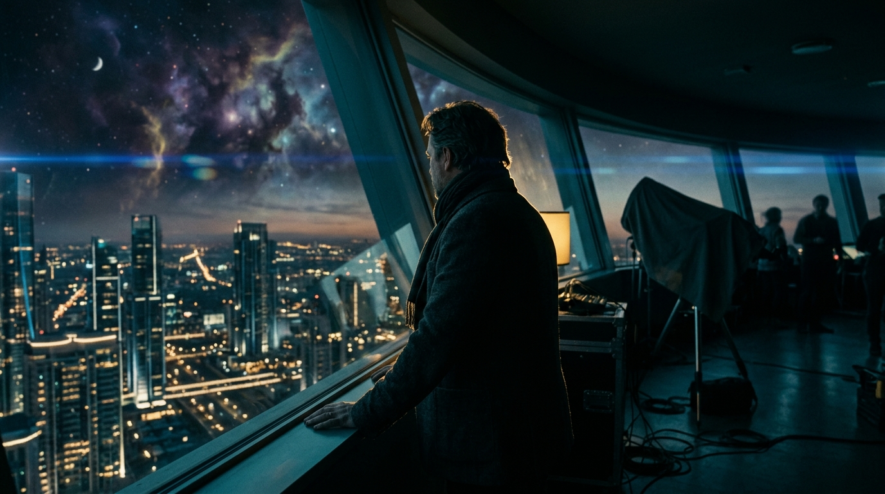

SCULPTING WORLDS IN LIGHT & CODE
VIRTUAL PRODUCTION • INTERACTIVE 3D • REAL-TIME GRAPHICS & WEBGL
I engineer next-generation digital experiences at the bleeding edge of real-time 3D, computational graphics, and cinematic storytelling. Bridging robust software architecture with boundary-pushing visual aesthetics.
Masterworks & Systems
A curated compilation of real-time virtual production worlds, interactive WebGL systems, and cinematic narrative studies.
“Technology is not merely CODE and pixels; it is the emotional architecture of human memory. In a digital century, we sculpt LIGHT to reveal truth.”
Every interaction and frame is engineered with precision. By uniting cutting-edge REAL-TIME computation—sub-millisecond shader execution, volumetric lighting, and procedural simulations—with deeply evocative cinematic storytelling, we forge a new WORLD where interfaces dissolve and pure emotion remains.
"When logic meets visual elegance, the interface dissolves and pure sensation remains."
System Modules & Arsenal
Mission-critical technical disciplines and creative software pipelines engineered for real-time fidelity.
Low-Level Systems Architecture
Real-time memory management, zero-overhead abstractions, SIMD vectorization, and multi-threaded compute pipelines.
Interactive 3D & Spatial Web
Crafting award-winning interactive browser experiences, custom GLSL raymarching shaders, and WebGPU graphics rendering.
Virtual Production & ICVFX
Pioneering in-camera visual effects on massive LED volumes with camera-tracked parallax and zero-latency real-time environments.
Generative AI & Neural Media
Exploring neural radiance fields (NeRFs), Gaussian splatting, custom diffusion synthesis, and procedural generative asset models.
Computational Physics & VFX
Procedural simulations of fluid quantum matter, volumetric dust, particle vector fields, and linear algebra coordinate transforms.
Color Science & ACES Grading
Mastering film print emulation LUTs, ACEScc color-managed workflows, and high-dynamic-range HDR10/Dolby Vision deliveries.
Call Sheet & Inquiries
Initiate dialogue for feature direction, virtual production commissions, or keynote collaborations.
Currently accepting select creative engineering commissions, interactive WebGL experiences, and technical lead roles for 2026.